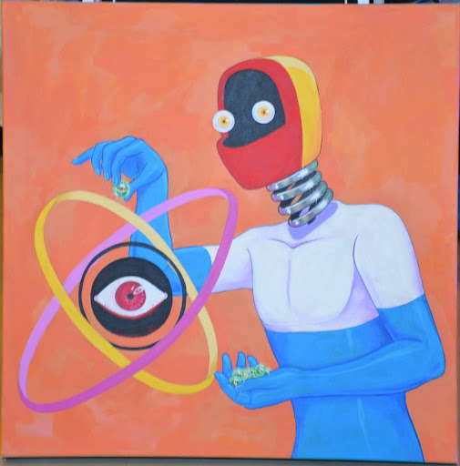
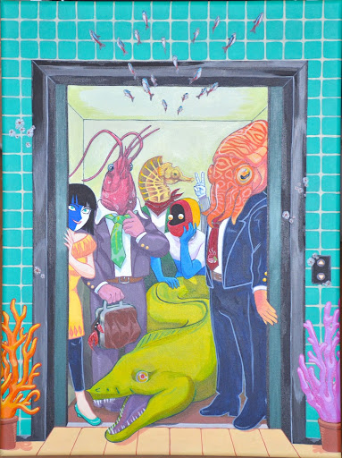
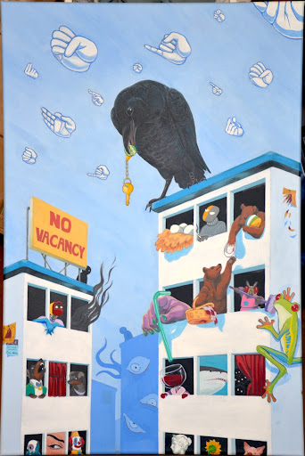
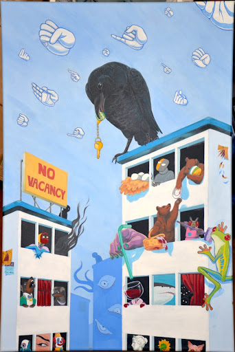
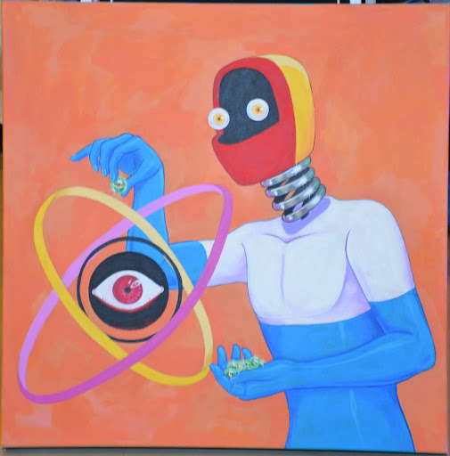
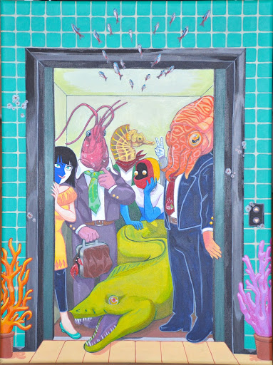
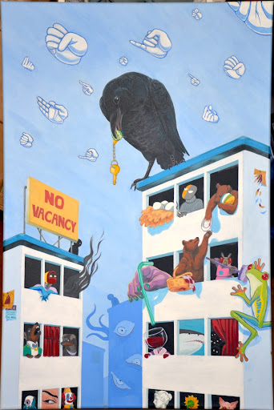

Genesis Gamez
Genesis Gamez is an undergraduate student of the University of California, Riverside. She will graduate with a Bachelor of the Arts in Studio Art. She hopes to continue her education in the areas of graphic design and animation and land a job in the industry. Currently, she is studying in Riverside, California and is expanding into digital media.
I would describe myself as a quick learner who is passionate about the area of art. I have extensive knowledge in various media that spans my artistic career: acrylic, oil pastel, charcoal, and ink. Some of my other art skills include: photography, sculpture, woodworking, and video editing. I have recently been honing my skills with digital art. This extends from using software like Sketchbook Pro, Adobe Photoshop, and Clip Studio Paint. I enjoy creating digital art in my free time as it also helps sharpen my knowledge and break in the new tablet I just got. Some mediums I would love to learn include oil painting and clay sculpture. Maybe someday in the future!
The art movements and themes I am inspired by include Surrealism, body and psychological horror, and Abstract Impressionism. Some artists my style of work has been likened to include Yayoi Kusama, Remedios Varo, and Andy Warhol. They have the sort of graphic art style and surrealist sensibilities that I enjoy. I mostly take inspiration from artists and content creators that I encounter in day-to-day life, especially now during the pandemic where being online has given me more time to search and explore. Shaun Tan is an illustrator whose keenly detailed pastel illustrations have been instrumental in developing my body of work. He has a sense of tranquil grandeur and unsettling beauty that I aim to capture. Jeff Lee Johnson and Walter Wick’s ‘I Spy’ Series have also been strong motivators in hiding small details and characters throughout my work. I believe in preserving a sense of child-like wonder amidst the psychological horror of my work, and activating the viewer to find and discover more by looking closer is my way of achieving that. Narrative is strong in my work; art professors have described my paintings as ’single-panel comics’ due to how jam-packed they are with imagery and implied stories. My work is also character-driven, and I seek out creators who also have narratives in their work. Joel G.’s ENA series sparked my love of telling visual stories without necessarily holding the viewers hand; what the viewer comes up with in their mind can sometimes be much more compelling than what I can suggest, and I want to encourage that sense. I am always looking, listening, and learning about new ways of approaching art. Not only does this change the experience a viewer may have, but it also pushes me to be a better artist and consider the thought process of people in a more intricate manner. I enjoy feedback on my work because it gives me a sense of what direction my art is going in and whether I want to change that.
Experience
Librarian
• Did 30 hours volunteer work for Riverside's Highgrove Library
• Helped organize reading events to encourage children to become readers
• Experience with filing and sorting books and scheduling events
Teaching Assistant
• Did 30 hours volunteer work in Highgrove Elemantary's afterschool program
• Helped kids do homework and brought materials to teach them how to draw
Gallery Artist
• Developed a body of work for display at the Sweeney Art Gallery
• Became familiarized with the aspects of geting work shown in a gallery
• Experience with filling forms and clear communication
• Provided input and help for other artists
Education
UC Riverside
Portfolio




 

 
